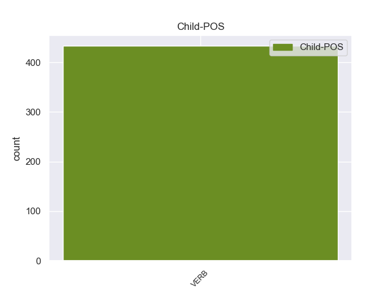

Distribution of features within this leaf



Agreement Rules sorted by frequency.
- When the dependent token is the auxiliary(aux) of the head token, and the dependent token is AUX.
1 Επίσης _ _ _ _ 0 _ _ _
2 ο _ _ _ _ 0 _ _ _
3 Βενιαμίν _ _ _ _ 0 _ _ _
4 Νετανιάχου _ _ _ _ 0 _ _ _
5 εξέφρασε _ _ _ _ 0 _ _ _
6 ικανοποίηση _ _ _ _ 0 _ _ _
7 για _ _ _ _ 0 _ _ _
8 την _ _ _ _ 0 _ _ _
9 θέση _ _ _ _ 0 _ _ _
10 του _ _ _ _ 0 _ _ _
11 Αμερικανού _ _ _ _ 0 _ _ _
12 Προέδρου _ _ _ _ 0 _ _ _
13 ότι _ _ _ _ 0 _ _ _
14 « _ _ _ _ 0 _ _ _
15 το _ _ _ _ 0 _ _ _
16 Ισραήλ _ _ _ _ 0 _ _ _
17 θα _ _ _ _ 0 _ _ _
18 πρέπει πρέπει AUX AUX Aspect=Imp|Mood=Ind|Number=Sing|Person=3|Tense=Pres|VerbForm=Fin|Voice=Act 20 aux _ _
19 να _ _ _ _ 0 _ _ _
20 μπορεί μπορώ VERB VERB Aspect=Imp|Mood=Ind|Number=Sing|Person=3|Tense=Pres|VerbForm=Fin|Voice=Act 0 _ _ _
21 να _ _ _ _ 0 _ _ _
22 αμυνθεί _ _ _ _ 0 _ _ _
23 ενάντια _ _ _ _ 0 _ _ _
24 σε _ _ _ _ 0 _ _ _
25 οποιαδήποτε _ _ _ _ 0 _ _ _
26 απειλή _ _ _ _ 0 _ _ _
27 » _ _ _ _ 0 _ _ _
28 . _ _ _ _ 0 _ _ _
1 Αν _ _ _ _ 0 _ _ _
2 οι _ _ _ _ 0 _ _ _
3 αρχές _ _ _ _ 0 _ _ _
4 του _ _ _ _ 0 _ _ _
5 Ελσίνκι _ _ _ _ 0 _ _ _
6 είχαν _ _ _ _ 0 _ _ _
7 πει _ _ _ _ 0 _ _ _
8 ότι _ _ _ _ 0 _ _ _
9 θέλουν _ _ _ _ 0 _ _ _
10 100 _ _ _ _ 0 _ _ _
11 λεωφορεία _ _ _ _ 0 _ _ _
12 που _ _ _ _ 0 _ _ _
13 να _ _ _ _ 0 _ _ _
14 κινούνται _ _ _ _ 0 _ _ _
15 με _ _ _ _ 0 _ _ _
16 φυσικό _ _ _ _ 0 _ _ _
17 αέριο _ _ _ _ 0 _ _ _
18 και _ _ _ _ 0 _ _ _
19 αυτή _ _ _ _ 0 _ _ _
20 είναι _ _ _ _ 0 _ _ _
21 η _ _ _ _ 0 _ _ _
22 σύμβαση _ _ _ _ 0 _ _ _
23 , _ _ _ _ 0 _ _ _
24 τότε _ _ _ _ 0 _ _ _
25 εντάξει _ _ _ _ 0 _ _ _
26 , _ _ _ _ 0 _ _ _
27 αν _ _ _ _ 0 _ _ _
28 αυτό _ _ _ _ 0 _ _ _
29 είναι είμαι AUX AUX Aspect=Imp|Mood=Ind|Number=Sing|Person=3|Tense=Pres|VerbForm=Fin|Voice=Pass 31 cop _ _
30 που _ _ _ _ 0 _ _ _
31 θέλουν θέλω VERB VERB Aspect=Imp|Mood=Ind|Number=Plur|Person=3|Tense=Pres|VerbForm=Fin|Voice=Act 0 _ _ _
32 . _ _ _ _ 0 _ _ _
Disagree Examples:
1 Ο _ _ _ _ 0 _ _ _
2 λόγος _ _ _ _ 0 _ _ _
3 που _ _ _ _ 0 _ _ _
4 διαθέτουμε _ _ _ _ 0 _ _ _
5 κανόνες _ _ _ _ 0 _ _ _
6 για _ _ _ _ 0 _ _ _
7 τις _ _ _ _ 0 _ _ _
8 κρατικές _ _ _ _ 0 _ _ _
9 ενισχύσεις _ _ _ _ 0 _ _ _
10 είναι _ _ _ _ 0 _ _ _
11 η _ _ _ _ 0 _ _ _
12 διασφάλιση _ _ _ _ 0 _ _ _
13 της _ _ _ _ 0 _ _ _
14 ορθής _ _ _ _ 0 _ _ _
15 λειτουργίας _ _ _ _ 0 _ _ _
16 της _ _ _ _ 0 _ _ _
17 κοινής _ _ _ _ 0 _ _ _
18 αγοράς _ _ _ _ 0 _ _ _
19 και _ _ _ _ 0 _ _ _
20 πρέπει _ _ _ _ 0 _ _ _
21 να _ _ _ _ 0 _ _ _
22 καταργήσουμε _ _ _ _ 0 _ _ _
23 τους _ _ _ _ 0 _ _ _
24 φραγμούς _ _ _ _ 0 _ _ _
25 σ _ _ _ _ 0 _ _ _
26 τον _ _ _ _ 0 _ _ _
27 ανταγωνισμό _ _ _ _ 0 _ _ _
28 και _ _ _ _ 0 _ _ _
29 σ _ _ _ _ 0 _ _ _
30 το _ _ _ _ 0 _ _ _
31 ελεύθερο _ _ _ _ 0 _ _ _
32 εμπόριο _ _ _ _ 0 _ _ _
33 προκειμένου _ _ _ _ 0 _ _ _
34 να _ _ _ _ 0 _ _ _
35 επιτρέψουμε _ _ _ _ 0 _ _ _
36 σ _ _ _ _ 0 _ _ _
37 την _ _ _ _ 0 _ _ _
38 Επιτροπή _ _ _ _ 0 _ _ _
39 να _ _ _ _ 0 _ _ _
40 ασκεί _ _ _ _ 0 _ _ _
41 αστυνόμευση _ _ _ _ 0 _ _ _
42 , _ _ _ _ 0 _ _ _
43 ενώ _ _ _ _ 0 _ _ _
44 το _ _ _ _ 0 _ _ _
45 Συμβούλιο _ _ _ _ 0 _ _ _
46 θα _ _ _ _ 0 _ _ _
47 έπρεπε πρέπει AUX AUX Aspect=Imp|Mood=Ind|Number=Sing|Person=3|Tense=Past|VerbForm=Fin|Voice=Act 50 aux _ _
48 πραγματικά _ _ _ _ 0 _ _ _
49 να _ _ _ _ 0 _ _ _
50 ντρέπεται ντρέπομαι VERB VERB Aspect=Imp|Mood=Ind|Number=Sing|Person=3|Tense=Pres|VerbForm=Fin|Voice=Pass 0 _ _ _
51 που _ _ _ _ 0 _ _ _
52 προκαλεί _ _ _ _ 0 _ _ _
53 την _ _ _ _ 0 _ _ _
54 Επιτροπή _ _ _ _ 0 _ _ _
55 σε _ _ _ _ 0 _ _ _
56 αυτόν _ _ _ _ 0 _ _ _
57 τον _ _ _ _ 0 _ _ _
58 συγκεκριμένο _ _ _ _ 0 _ _ _
59 τομέα _ _ _ _ 0 _ _ _
60 . _ _ _ _ 0 _ _ _
1 Θα _ _ _ _ 0 _ _ _
2 έπρεπε πρέπει AUX AUX Aspect=Imp|Mood=Ind|Number=Sing|Person=3|Tense=Past|VerbForm=Fin|Voice=Act 4 aux _ _
3 να _ _ _ _ 0 _ _ _
4 περνούν περνώ VERB VERB Aspect=Imp|Mood=Ind|Number=Plur|Person=3|Tense=Pres|VerbForm=Fin|Voice=Act 0 _ _ _
5 τον _ _ _ _ 0 _ _ _
6 περισσότερο _ _ _ _ 0 _ _ _
7 χρόνο _ _ _ _ 0 _ _ _
8 τους _ _ _ _ 0 _ _ _
9 εδώ _ _ _ _ 0 _ _ _
10 . _ _ _ _ 0 _ _ _
1 Σ _ _ _ _ 0 _ _ _
2 τις _ _ _ _ 0 _ _ _
3 3_Σεπτεμβρίου_1895 _ _ _ _ 0 _ _ _
4 ξέσπασε _ _ _ _ 0 _ _ _
5 επανάσταση _ _ _ _ 0 _ _ _
6 , _ _ _ _ 0 _ _ _
7 που _ _ _ _ 0 _ _ _
8 δεν _ _ _ _ 0 _ _ _
9 βρήκε _ _ _ _ 0 _ _ _
10 σύμφωνο _ _ _ _ 0 _ _ _
11 το _ _ _ _ 0 _ _ _
12 Βενιζέλο _ _ _ _ 0 _ _ _
13 , _ _ _ _ 0 _ _ _
14 ο _ _ _ _ 0 _ _ _
15 οποίος _ _ _ _ 0 _ _ _
16 θεωρούσε _ _ _ _ 0 _ _ _
17 ότι _ _ _ _ 0 _ _ _
18 οι _ _ _ _ 0 _ _ _
19 Κρητικοί _ _ _ _ 0 _ _ _
20 δεν _ _ _ _ 0 _ _ _
21 έπρεπε πρέπει AUX AUX Aspect=Imp|Mood=Ind|Number=Sing|Person=3|Tense=Past|VerbForm=Fin|Voice=Act 23 aux _ _
22 να _ _ _ _ 0 _ _ _
23 ενεργούν ενεργώ VERB VERB Aspect=Imp|Mood=Ind|Number=Plur|Person=3|Tense=Pres|VerbForm=Fin|Voice=Act 0 _ _ _
24 αυτοβούλως _ _ _ _ 0 _ _ _
25 αλλά _ _ _ _ 0 _ _ _
26 σε _ _ _ _ 0 _ _ _
27 συνεννόηση _ _ _ _ 0 _ _ _
28 με _ _ _ _ 0 _ _ _
29 την _ _ _ _ 0 _ _ _
30 ελληνική _ _ _ _ 0 _ _ _
31 κυβέρνηση _ _ _ _ 0 _ _ _
32 σ _ _ _ _ 0 _ _ _
33 την _ _ _ _ 0 _ _ _
34 Αθήνα _ _ _ _ 0 _ _ _
35 . _ _ _ _ 0 _ _ _